Costing钣金件
在本课程中，将计算制造钣金零件的成本。在本课中，您将学习如何：
• 估算钣金零件成本
• 使用成本计算评估设计变更
• 更改成本计算输入
• 加入制造减价
• 增加可影响成本的自定义操作
• 比较不同零件材料的成本
• 生成成本计算结果报告
接下来打开零件，然后使用 Costing 工具计算成本。
开启 Costing，“工具”工具栏或 CommandManager 上的“评估”选项卡。或者单击工具 > SOLIDWORKS 应用程序 > Costing
在 Costing 任务窗格的方法中，选择钣金。
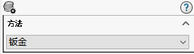在 Costing 任务窗格的 Costing 模板下，选择 sheet_metal_tutorial。 （成本计算模板中包含您或您的制造供应商将用于制造零件的过程。可在模板中指定如下信息：材料成本与规格、制造工序成本以及制造设置成本。）
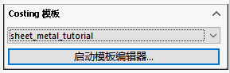在 Costing 任务窗格中的材料下，确保：
a. 类设置为钢。
b. 名称设置为普通碳钢。
在 Costing 任务窗格中的消息下，单击开始成本估算。
Costing 任务窗格将显示 估计的零件单位成本。
Costing 任务窗格项目 说明
比较 成本计算工具根据模板中的数据和图形区中的零件来计算零件的成本。
分解 成本计算的分解结果指示材料费用和制造（工时、机器运转时间和管理）费用占总成本的一定百分比。
更改模型几何体
更改模型几何体，以了解对制造成本有何影响。在图形区域中，双击零件。将所示尺寸从 120 更改为 250。（增加材料估算成本将上升）
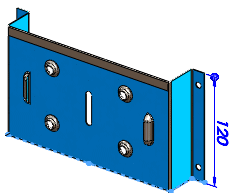更改材料的厚度和成本
接下来将更改材料的厚度和成本，以便了解这两者如何影响制造成本。在钣金成本计算任务窗格的材料下模板的厚度中，选择 2.0000 mm。（增加材料估算成本将上升）
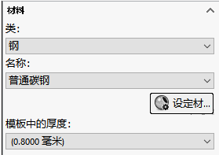添加设置成本
SOLIDWORKS 软件窗口左侧的 CostingManager 显示成本计算工具如何对制造零件所需的每个操作进行分类。 接下来将添加设置成本，以便包含购买的单项。
在 CostingManager 中，展开设置，将光标悬停在激光设置上方将显示为零件应用的设置成本部分。
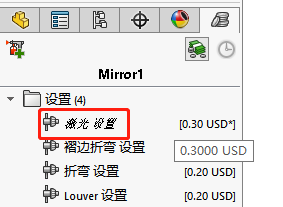（CostingManager 中的所有成本值都针对单个零件。当前每个批量有 100 个零件，而该机器的设置成本为每个批量 20 美元，所以每个零件的总成本为 0.20 美元。） 2. 右键单击设置，然后单击选择设置成本 > 购买定单项。（每个零件的估算成本将上升，因为设置成本拆分给了输入的总数量中的每个零件）
切割
接下来将检查 CostingManager，以便了解为制造零件而加入的操作。
展开切割路径：要切割六个激光切割路径。选择任一切割路径，切割路径将在模型中突出显示。将光标悬停在切割路径上，将显示该切割路径的成本计算。
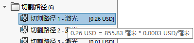 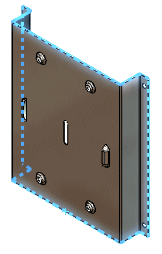折弯
展开折弯：共有 4 个折弯操作，并且零件中有一个褶边操作。
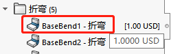库特征
展开库特征。该零件中有两个库特征。仅当模板中包含库特征的信息时，成本估算中才会包含库特征。可编辑模板，以便加入任何库特征。
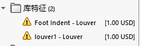 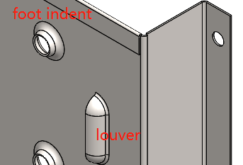更改坯件大小
坯件大小是零件的制造原材料的大小。接下来将更改坯件大小，以便了解坯件大小如何影响制造成本。
在钣金成本计算任务窗格的坯件大小中，选择在图形区域中预览。将显示坯件大小的边界框预览。将偏移设置为 25，然后按 Enter。边界框变大且估算成本上升。将偏移设置为 0，然后按 Enter。
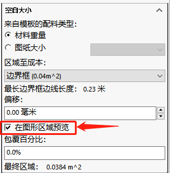更改数量多少
清除在图形区域中预览。更改要制造的零件数量。接下来将更改要制造的零件数量，以便了解该数量如何影响制造成本。
将零件总数设置为 1，然后按 Enter。估算成本将上升 （因为机器设置成本拆分给了批量中的各个零件，每个零件承担的设置成本将增加）
添加减价
接下来将向零件添加减价，以便了解减价如何影响价格。
在涨价/减价下，可为零件应用涨价或减价。如果要增加利润率，请输入正值。如果从供应商处获得了减价，请输入负值。为总成本的 % 输入 -10，然后按 Enter。每个零件的估算成本将下降 10%。
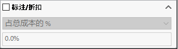应用自定义操作
接下来将对零件应用自定义操作。由于零件由普通碳钢制成，所以可能生锈，因此您可以自定义操作的形式对零件进行阳极处理。
在 CostingManager 中，单击添加自定义操作。选择阳极处理。（阳极处理通常作为自定义操作列出，因为钣金模板中包含阳极处理。 PropertyManager 将显示与阳极处理操作相关的所有成本信息）
（设置成本）
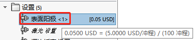（操作成本）
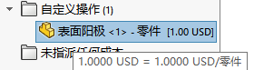比较材料成本
阳极处理价格昂贵，但仍然存在生锈问题。可以比较替代材料的成本。接下来将设置一个基准价格，用于比较部件的替代材料。
在 Costing 任务窗格的估计的零件单位成本下，单击设定基准。在材料下的名称中，选择 AISI 304（由于 AISI 是不锈钢可防止生锈，所以可以去除阳极处理操作）
生成报表
接下来将生成成本计算结果报告。在 Costing 任务窗格底部单击生成报告 。此时会显示报告对话框。
- 选取出版时显示报表。
- 设置其它选项，然后单击发布。
- 关闭报表。